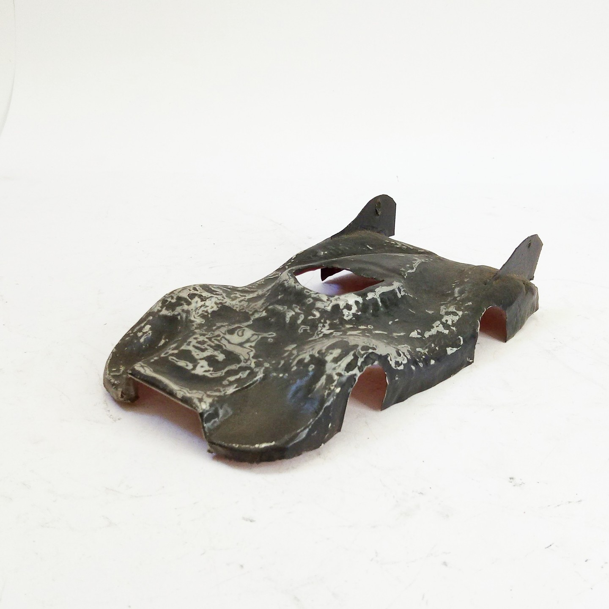

Auto e veicoli stradali · scale model archive
Slot car body made with thin copper foil reinforced with epoxy resin, based on Porsche 936 initial prototype
Slot car body made with thin copper foil reinforced with epoxy resin, based on Porsche 936 initial prototype. Scale 1/32

Photo gallery
English description
Scale 1/32